DE: CENTRO DE COMANDO TÁTICO (OVERLORD)
PARA: ESQUADRÃO DE ASSALTO (GHOSTS)
OPERADORES DESIGNADOS: GHOST ACTUAL "Epyon12" | GHOST LEAD "Muguiga"
CLASSIFICAÇÃO: ULTRA SECRETO / ESTRITAMENTE PESSOAL
ASSUNTO: ORDEM DE OPERAÇÕES - "OPERAÇÃO GROWLER SILENT"
// CARTAS DE NAVEGAÇÃO E SETORIZAÇÃO (KNEEBOARD)

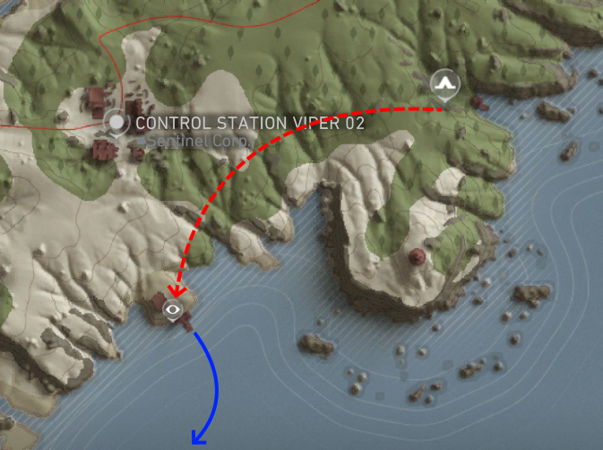

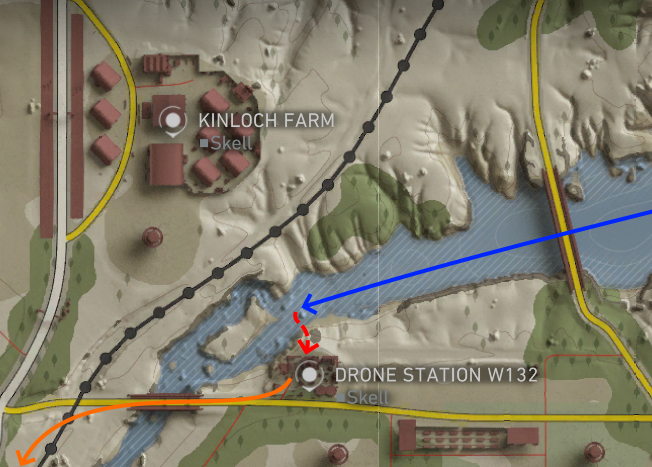

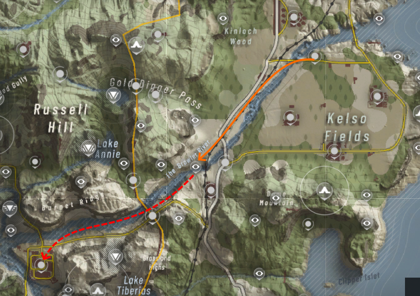

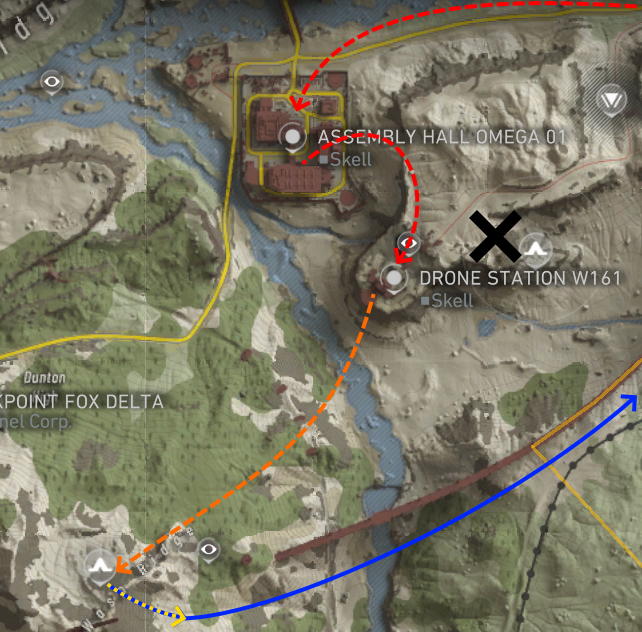
Senhores, prestem atenção. A Inteligência confirmou a localização de uma instalação clandestina da Skell Tech operada por forças Rogue. Eles estão manufaturando drones armados sendo usados ativamente contra a população civil de Auroa. Além disso, satélites detectaram um protótipo de helicóptero com capacidades anti-radar no local. Se essa aeronave entrar em operação, perderemos o controle do espaço aéreo no setor.
O objetivo de vocês é paralisar a produção e extrair o protótipo. A margem de erro é zero.
Resumo Tático (SITREP)
| Parâmetro | Detalhe |
|---|---|
| Ponto de Infiltração | Murmur Delta Bivouac |
| Zona de Risco Extremo | The Growler River (Patrulhas aéreas pesadas) |
| ROE (Engajamento) | Furtividade absoluta até o objetivo principal. Letalidade total no complexo. |
| Risco Ambiental | Lake Tiberias Bivouac - NOGO ZONE. (Contaminação radioativa letal) |
Execução da Missão (Fases)
FASE 1: INSERÇÃO E LOGÍSTICA
Vocês iniciarão a operação no Murmur Delta Bivouac. Desloquem-se até o píer adjacente e utilizem o transporte aquático para alcançar a foz do The Growler River. A topografia do rio impossibilita a navegação prolongada; o desembarque é obrigatório.
Avancem até a Drone Station W132, que os relatórios indicam estar abandonada, e garantam transporte terrestre. Prossigam pelos trilhos novos até a Skell Technology Location.
Nota de Suprimentos: Vocês cairão desarmados de explosivos pesados. Uma equipe de scout infiltrou a área ontem à noite e escondeu uma caixa com cargas de C4 neste local. Recuperem os explosivos. Sem eles, a Fase 3 fracassa.

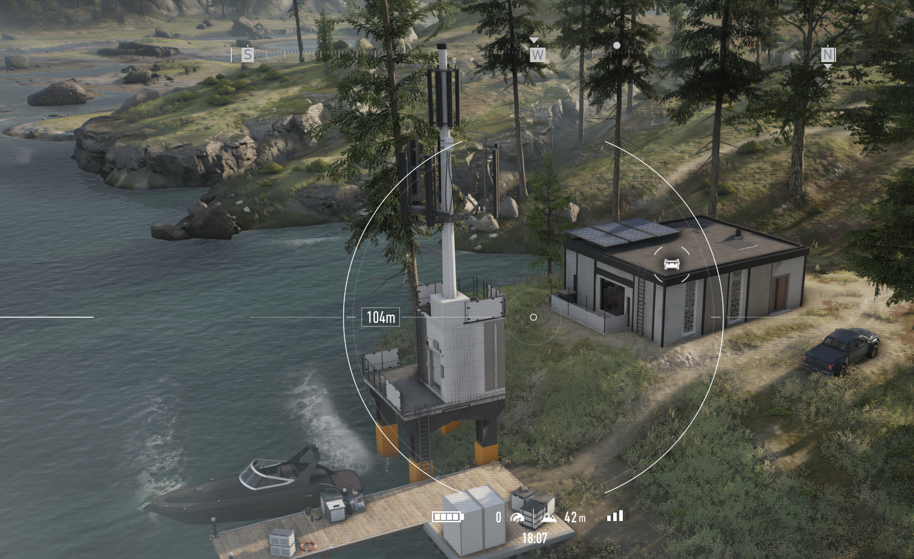

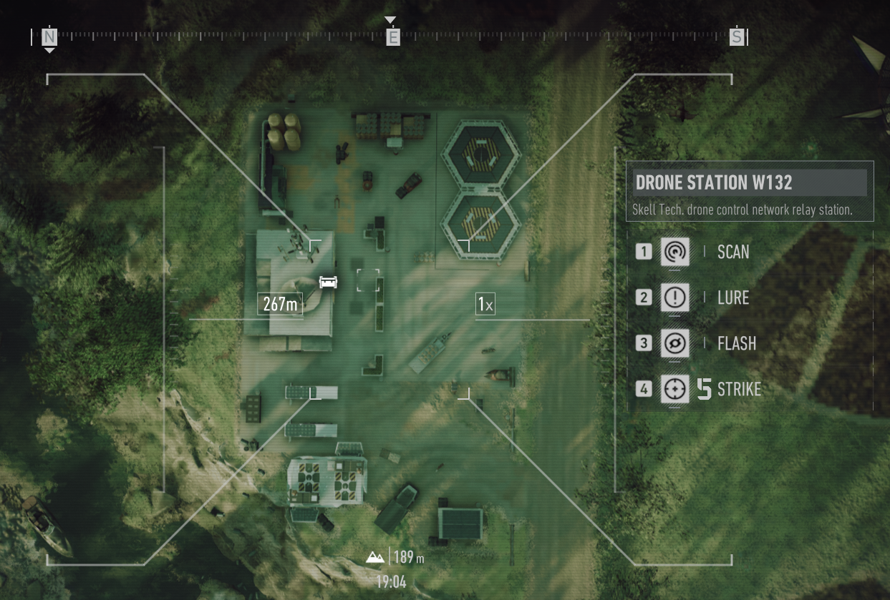

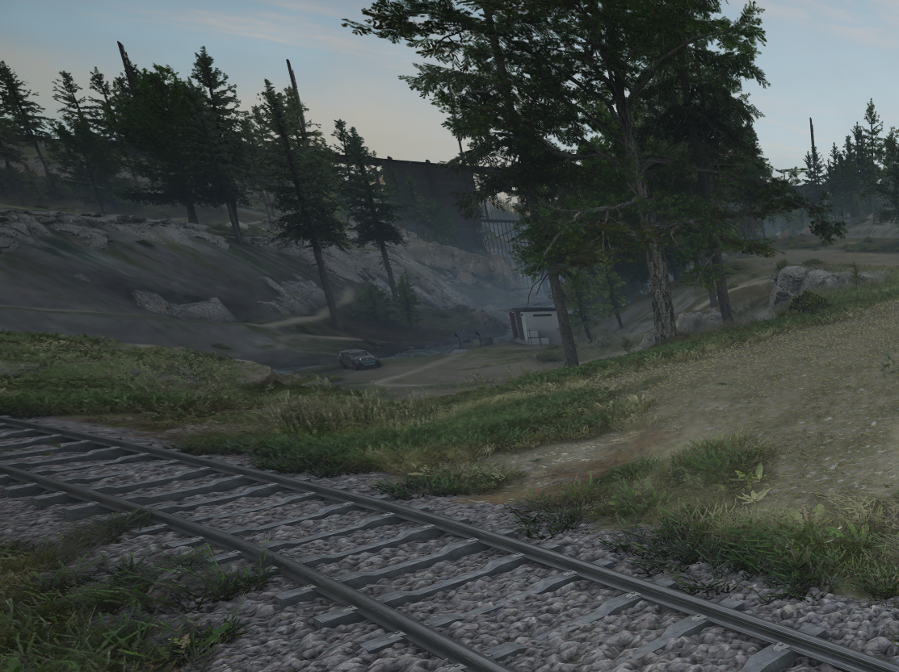

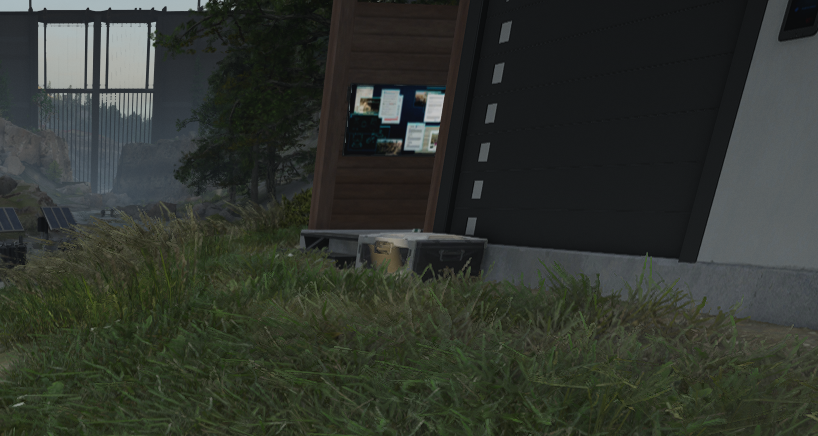
FASE 2: O GARGALO (STEALTH)
Com os explosivos assegurados, o esquadrão se aproximará do Portão 03. A partir deste ponto, o protocolo Ghost entra em vigor. O trecho subsequente do rio está sob vigilância constante de patrulhas de helicóptero inimigas. Mantenham-se nas sombras e evitem qualquer engajamento.

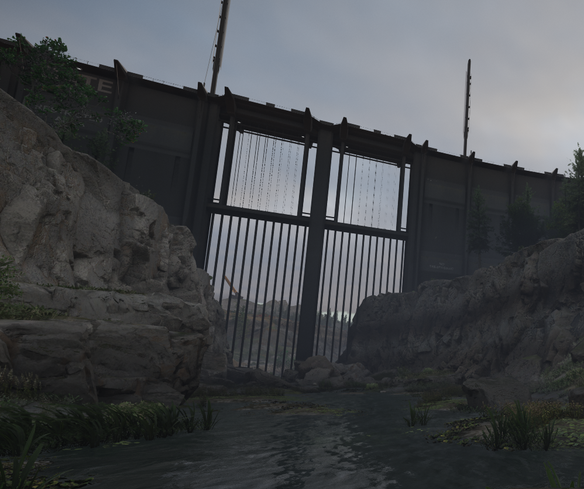

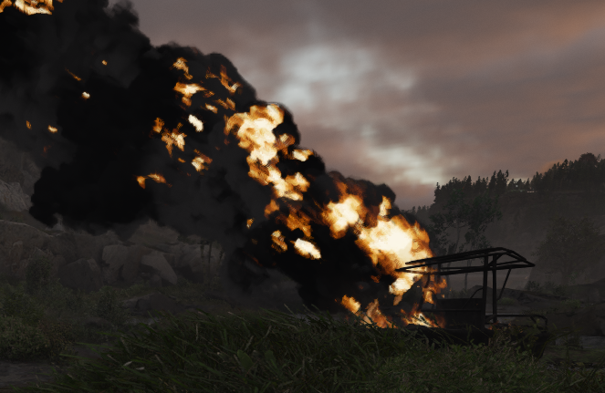
FASE 3: AÇÃO DIRETA
O alvo principal é a Assembly Hall Omega 01.
- Realizem o breach da estrutura.
- Limpem o salão de todos os hostis.
- Plantem o C4 no gerador de energia e detonem, paralisando a fábrica.
Imediatamente após a sabotagem, movam-se para a Drone Station W161 e eliminem a guarnição de reforços antes que eles possam organizar um contra-ataque na retaguarda de vocês.

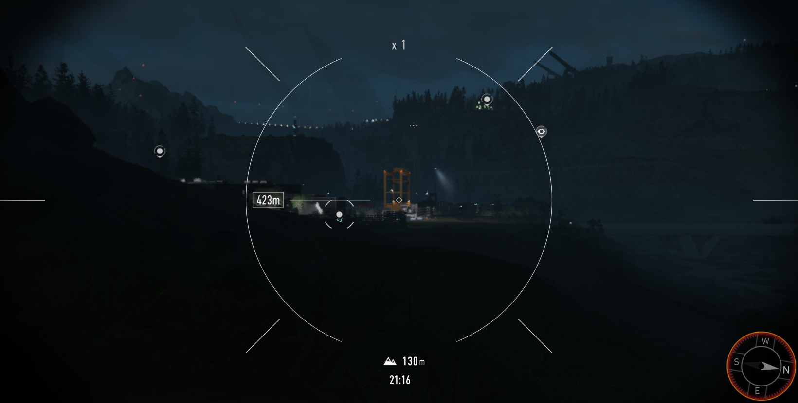

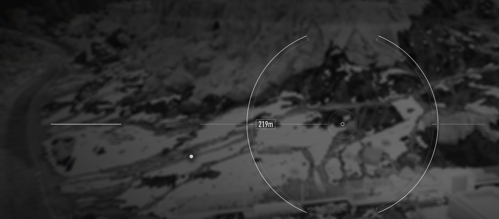

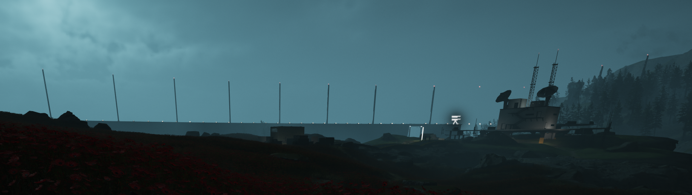
FASE 4: AQUISIÇÃO E EXFILTRAÇÃO (VFR)
Limpa a estação, prossigam a pé rumo ao Wasp Ridge Bivouac.
Aviso Crítico: O trajeto contorna o Lake Tiberias Bivouac. Esta é uma zona de exclusão (NOGO ZONE) intransponível devido a vazamentos radioativos de testes de drones. Mantenham distância. Caso encontrem patrulhas nos trilhos abandonados perto da encosta, engajem apenas se a detecção for iminente.
Ao alcançarem Wasp Ridge, localizem e embarquem no helicóptero protótipo.

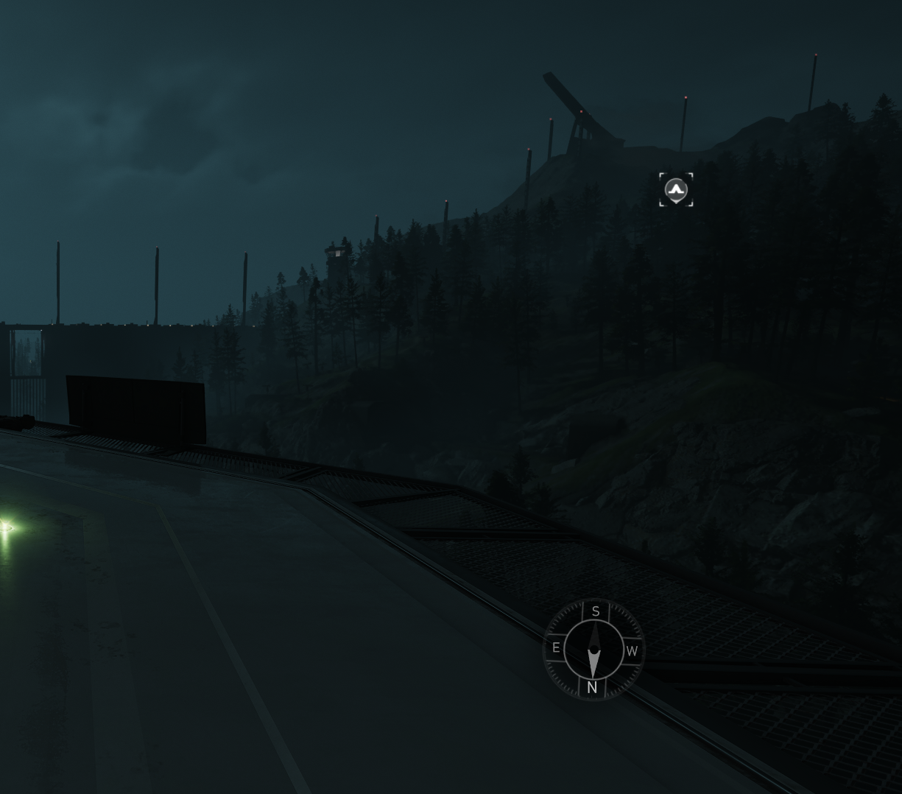

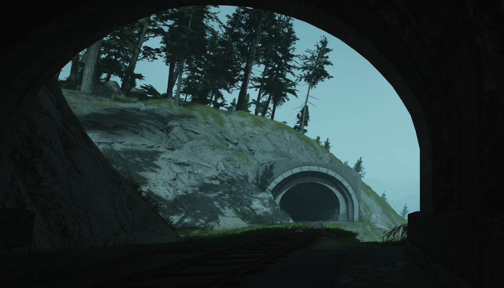
O piloto tem poucos segundos após a decolagem para baixar a altitude. Vocês deverão realizar a exfiltração contornando a barreira externa em voo estritamente visual (VFR). Utilizem o Portão 03 iluminado como Ponto de Encontro Visual (Rendezvous) para se reorientarem e sigam o curso do The Growler River pelo ar até avistarem as luzes do Murmur Delta Bivouac.

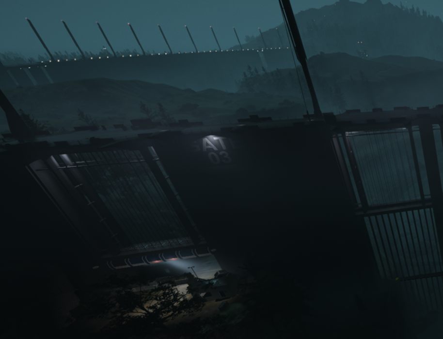

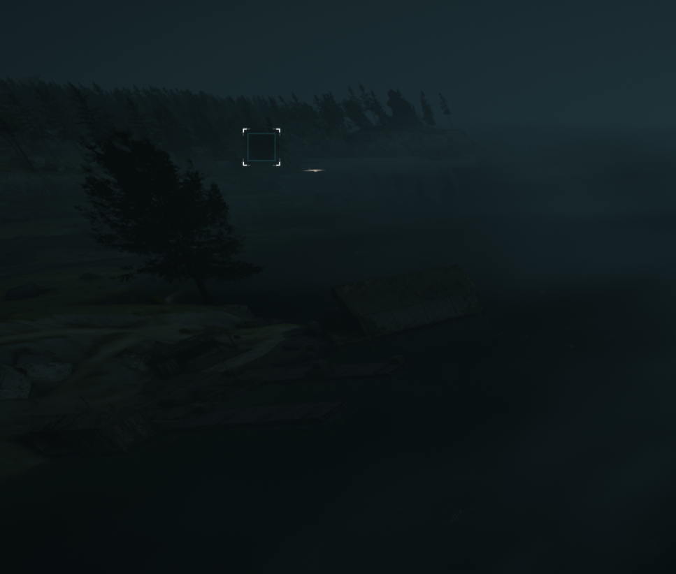
Repassem suas funções, verifiquem os rádios e preparem o equipamento. O tempo e a gravidade estão contra vocês.
Boa sorte, Ghosts. Dispensados.